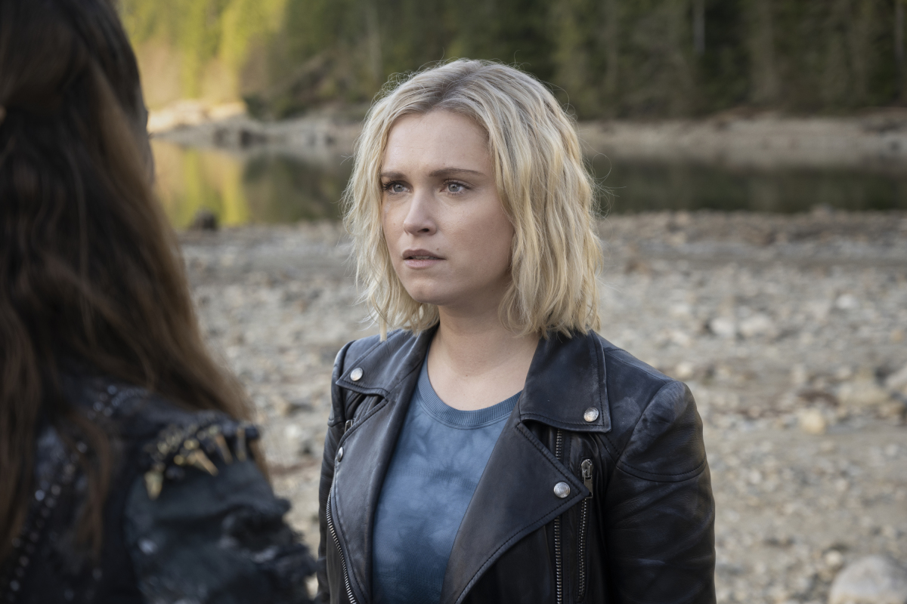
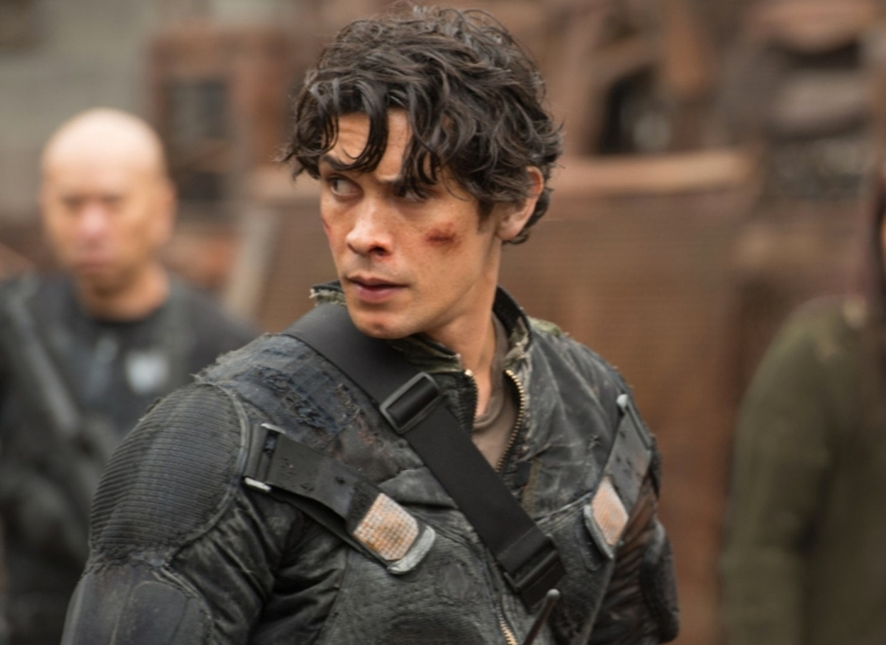
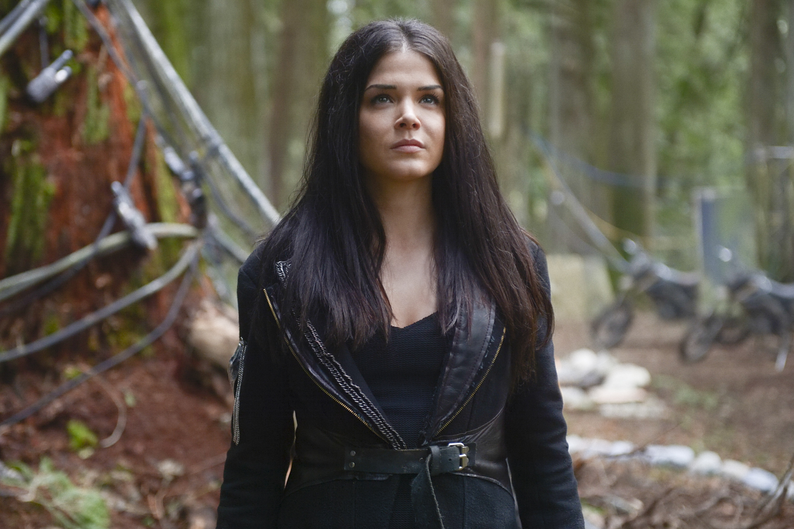
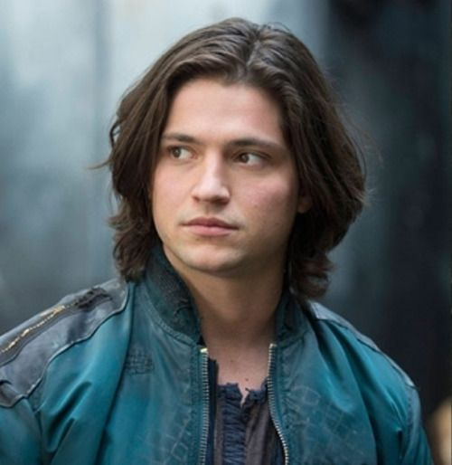
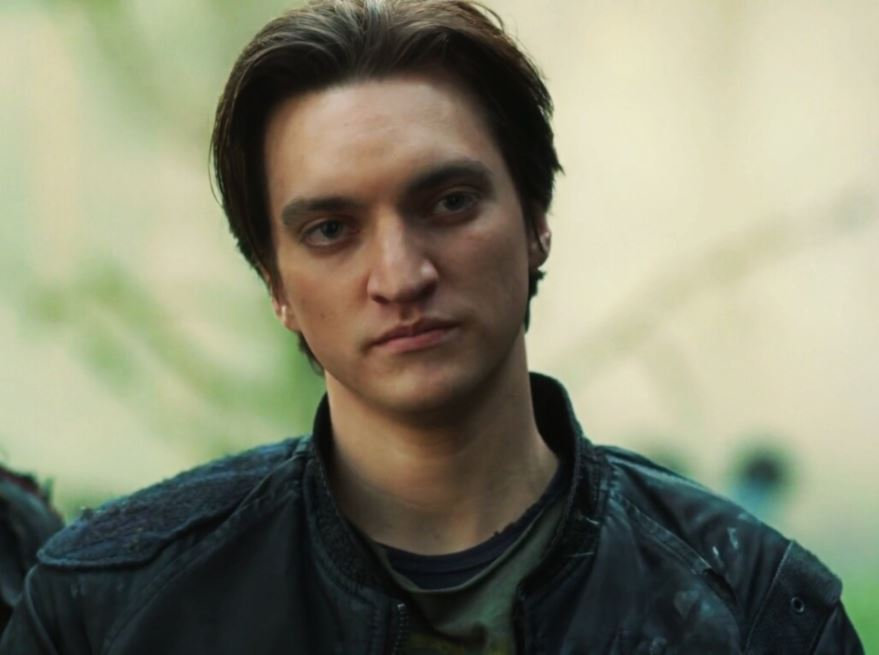
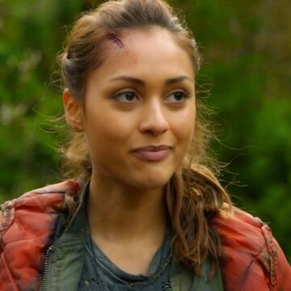
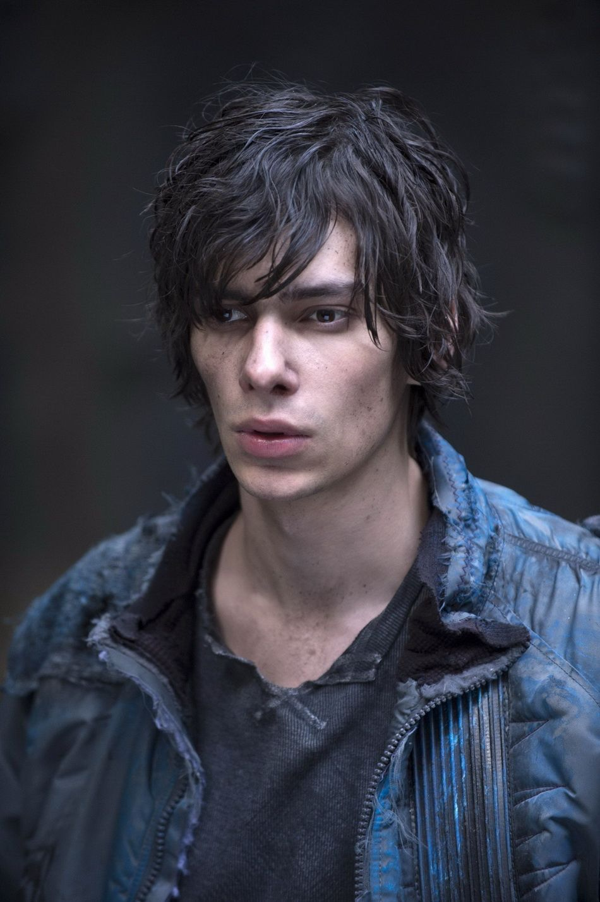
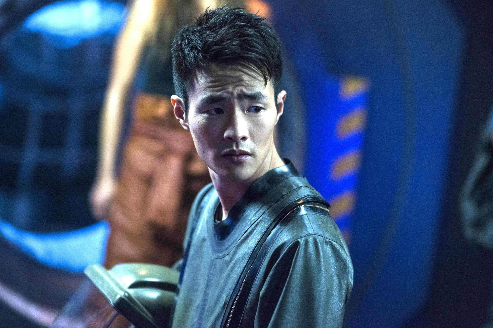

Home
Seasons
Characters
Streaming
Characters

- Name: Clarke Griffin
- Actor: Eliza Taylor
- Lead character
- Age: 17 (season 1)
- First apperances: Premier episode
- Quote:"I bear it, so they don't have to."

- Name: Bellamy Blake
- Actor: Bob Morley
- Lead Character
- Age: 23 (season 1)
- First apperance: Premier episode
- Quote: "Who we are and who we need to be to survive are two very different things."

- Name: Octavia Blake
- Actor: Marie Avgeropoulos
- Lead Character
- Age: 17 (season 1)
- First apperance: Premier episode
- Quote: "You swore an oath to fight for all mankind. Well look around you,
we are mankind ... if I kill you, I kill myself!" (To Wonkru and the diciples)

- Name: Finn Collins
- Actor: Thomas McDonell
- Major Character
- Age: 17/18 (season 1)
- First apperance: Premier episode
- Quote: "Thanks princess" (To Clarke Griffin)

- Name: John Murphy
- Actor: Richard Harmon
- Major Character
- Age: 17 (season 1)
- First apperance: Premier episode
- Quote: "What the hell. Let's be good guys." (To Bellamy and Raven)

- Name: Raven Reyes
- Actor: Lindsey Morgan
- Major Charcter
- Age: 19 (season 1)
- First apperance: episode 2, season 1 "Earth Skills"
- Quote: "There's nothing like a little pain to remind you you're alive." (To Jasper)

- Name: Jasper Jordan
- Actor: Devon Bostick
- Major character in the first 4 seasons
- Age: 16 (season 1)
- First apperance: Premier episode
- Quote: "See you on the other side." (To Clarke, Finn, Octavia and Monty)

- Name: Monty Green
- Actor: Christopher Larkin
- Major Character in the first 5 seasons
- Age: under 18 (season 1)
- First apperance: Premier espisode
- Quote: "Is the moon in here? I can’t change the tide if the moon won’t cooperate! It's basic physics." (To Jasper)